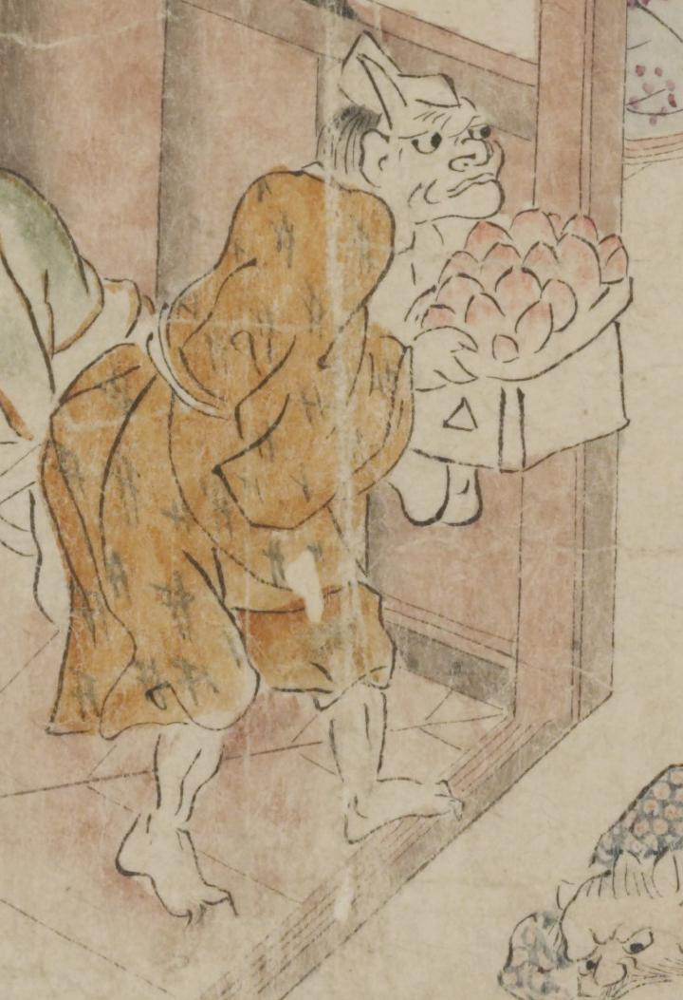

額に長い角を1本生やした鬼。白い冠をかぶり、目玉が大きい。絣柄の茶色い着物を着けている。足指の爪は鋭い。桃のようなものを乗せた三方を両手で持ち、運んでいる。
著作者：坂本弥一郎徳定／出典：親書誌：U426_nichibunken_0080：伊吹山酒呑童子絵巻；イブキヤマシュテンドウジエマキ／日付：2007／資源識別子：U426_nichibunken_0080_0007_0009
Copyright (c)2010- International Research Center for Japanese Studies, Kyoto, Japan. All rights reserved.